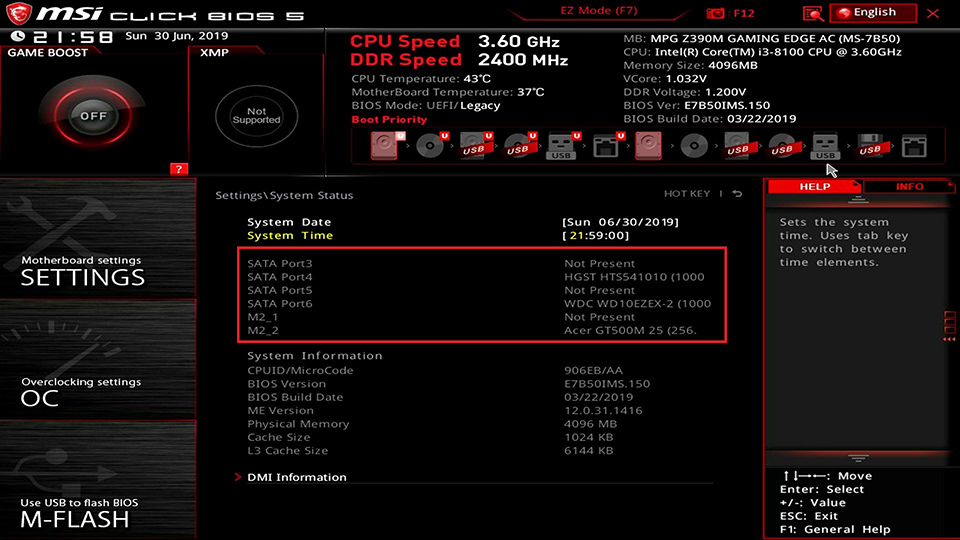
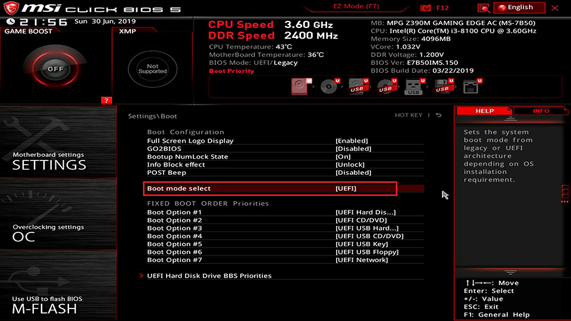
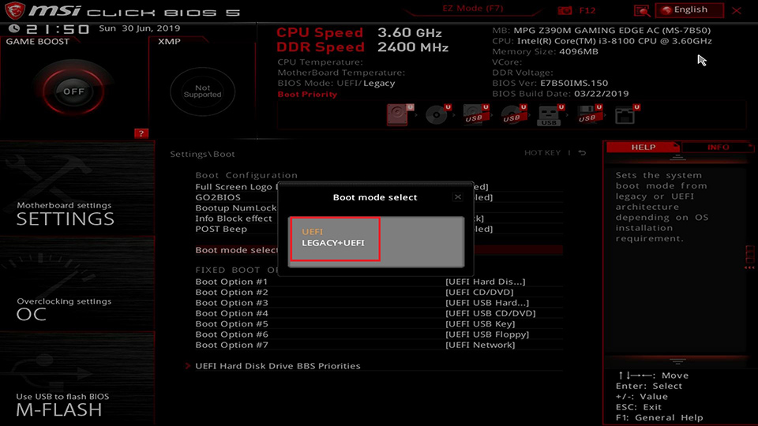
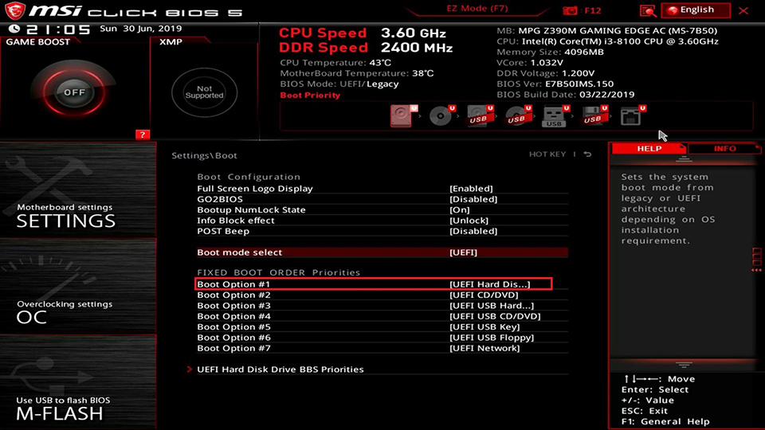
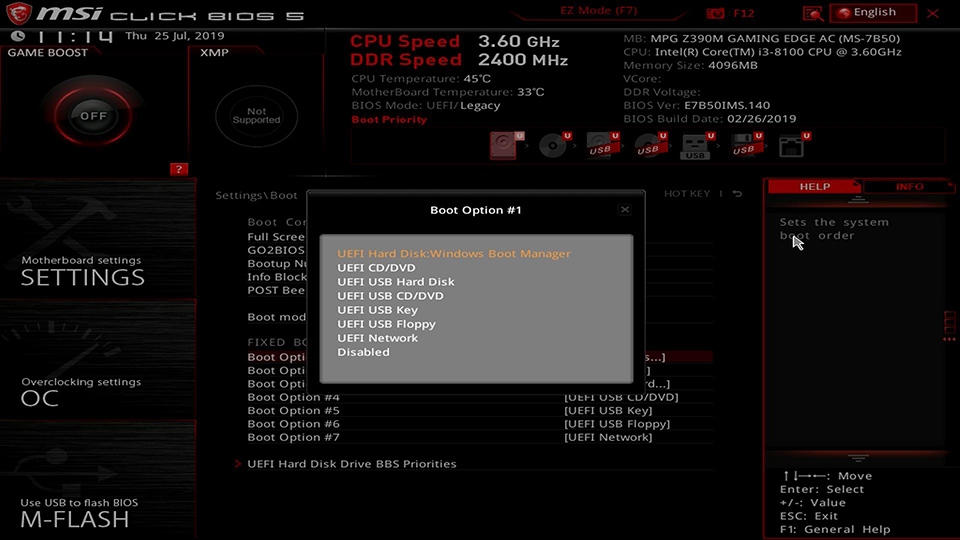
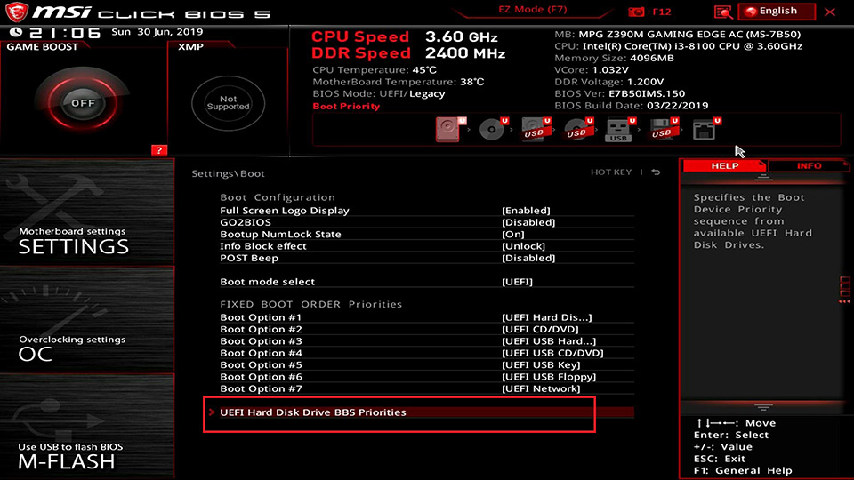
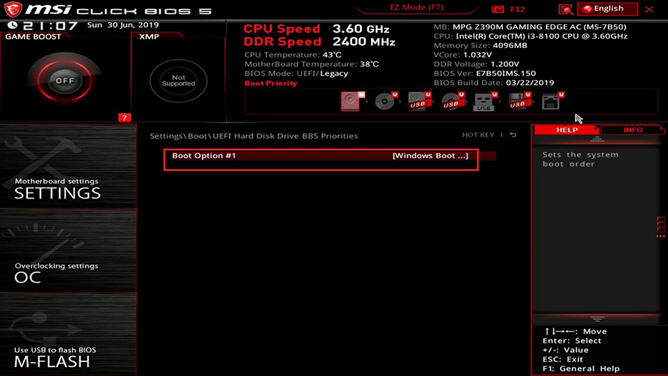
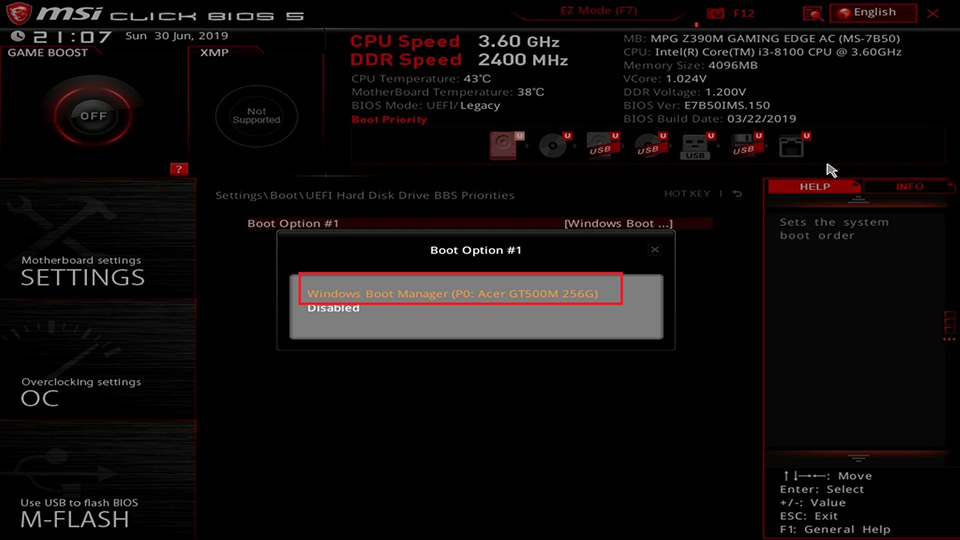
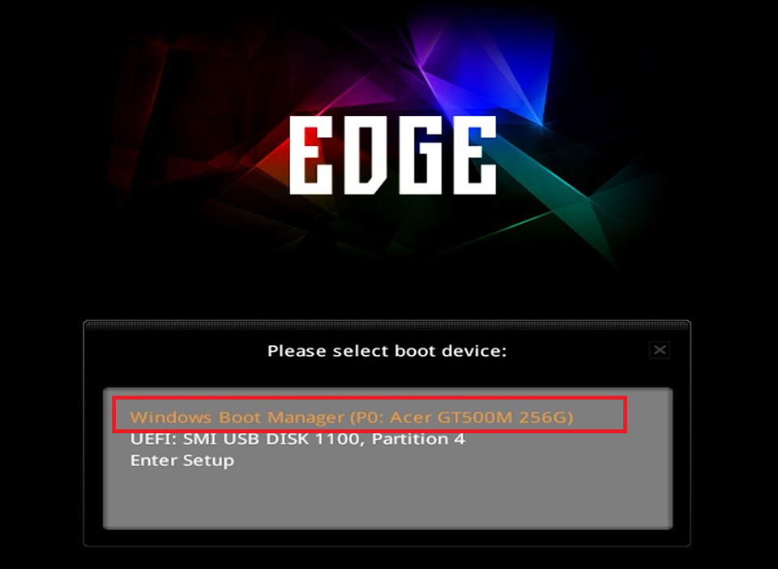
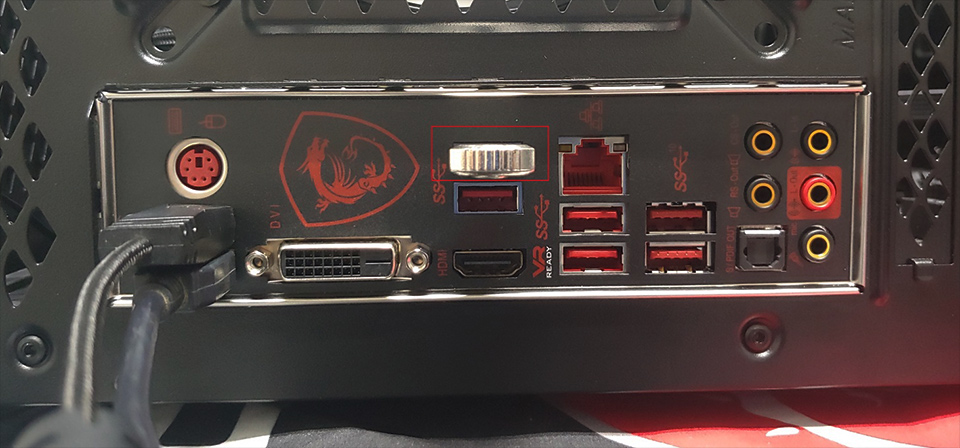

โดยทั่วไปเมื่อ Windows ไม่สามารถบูตได้เนื่องจากคอมพิวเตอร์ไม่สามารถตรวจจับอุปกรณ์บูตได้ หรืออุปกรณ์บูตมีปัญหาบางอย่างที่ระบบปฏิบัติการไม่สามารถอ่านค่าได้ระหว่างกระบวนการบูต. ขั้นตอนการบูตนั้นจะทำการตรวจสอบอุปกรณ์และอุปกรณ์ต่อพ่วงเป็นลำดับแรกเพื่อให้แน่ใจว่าฮาร์ดแวร์พร้อม ถัดจากนั้น BIOS จะให้บูตจากอุปกรณ์บูตที่ตั้งลำดับแรกไว้แล้วจึงอ่านในอุปกรณ์บูตเพื่อเข้าสู่ระบบปฏิบัติการ

1. ตรวจสอบว่าเครื่องตรวจพบอุปกรณ์บูตปกติ
เปิดเครื่องคอมพิวเตอร์ขึ้น จากนั้นให้กดปุ่ม [Delete] ค้างไว้จนเข้าเมนู BIOS
ไปที่ [settings] [System status] เพื่อตรวจสอบว่าตรวจจับอุปกรณ์บูตได้หรือไม่
2. ตรวจสอบการตั้งค่าบูตของ BIOS
เปิดเครื่องคอมพิวเตอร์ขึ้น จากนั้นให้กดปุ่ม [Delete] ค้างไว้จนเข้าเมนู BIOS
คลิก [Boot] → เลือก [Boot mode select]

เลือกโหมดบูตที่คุณต้องการ สำหรับ Windows 7 เลือกเป็น [LEGACY+UEFI], สำหรับ Windows 8/10 ลอง
[LEGACY+UEFI] และ [UEFI] ตามลำดับเพื่อดูว่าสามารถบูตเข้าระบบปฏิบัติการได้หรือไม่

เลือก [Boot Option#1]

ให้แน่ใจว่า [Boot Option#1] ตั้งค่าเป็น [UEFI HARD DISK] หรือ [HARD DISK]

เลือก [UEFI Hard disk Driver BBS Priority] หรือ [Hard disk driver BBS Priority]

เลือก [Boot Option#1]

ยืนยัน [Boot Option#1] ตั้งค่าเป็นอุปกรณ์บูต

กด F11 เพื่อระบุอุปกรณ์บูต
เปิดเครื่องคอมพิวเตอร์ จากนั้นให้กดปุ่ม [F11] ต่อเนื่องจนกระทั่งเข้าหน้าจอเลือกอุปกรณ์บูต ให้เลือกอุปกรณ์
บูตที่เห็นว่าสามารถเข้าระบบปฏิบัติการได้หรือไม่

ตรวจสอบว่ามีอุปกรณ์ USB อื่นเชื่อมต่อกับคอมพิวเตอร์หรือไม่
ในระหว่างกระบวนการบูตคอมพิวเตอร์จะทำการตรวจจับอุปกรณ์ต่อพ่วงชิ้นส่วนและอุปกรณ์ทั้งหมด อุปกรณ์
USB อาจทำให้กระบวนการบูตช้าลงหรืออาจส่งผลกระทบต่อการดำเนินการบูตระบบปฏิบัติการ. แนะนำให้ถอด
อุปกรณ์ USB อื่นออกทั้งหมดจากลองเปิดคอมพิวเตอร์ว่าสามารถเข้า Windows ได้หรือไม่.

ลองสลับอุปกรณ์บูตอื่นเพื่อยืนยันว่าไฟล์ระบบปฏิบัติการเสียหายหรือไม่
ทดสอบใช้อุปกร์บูตอื่นที่ติดตั้งระบบปฏิบัติการแล้ว ว่าสามารถใช้งานเข้า Windows ได้หรือไม่
ถ้าอุปกรณ์บูตอื่นสามารถเข้า Windows ได้ แสดงว่าอุปกรณ์ก่อนหน้าอาจจะมีปัญหา
ถ้าอุปกรณ์บูตอื่นไม่สามารถเข้า Windows ได้เช่นกัน แนะนำให้ทำการติดตั้งระบบปฏิบัติการใหม่ตามขั้นตอนถัดไป
การติดตั้งระบบปฏิบัติการใหม่
ทำการสร้างอุปกรณ์บูตใหม่และติดตั้งระบบปฏิบัติการใหม่ หากคอมพิวเตอร์สามารถเข้าใช้งานได้ปกติแสดงว่าอุปกรณ์ก่อนหน้านี้ไฟล์ระบบเสียหาย